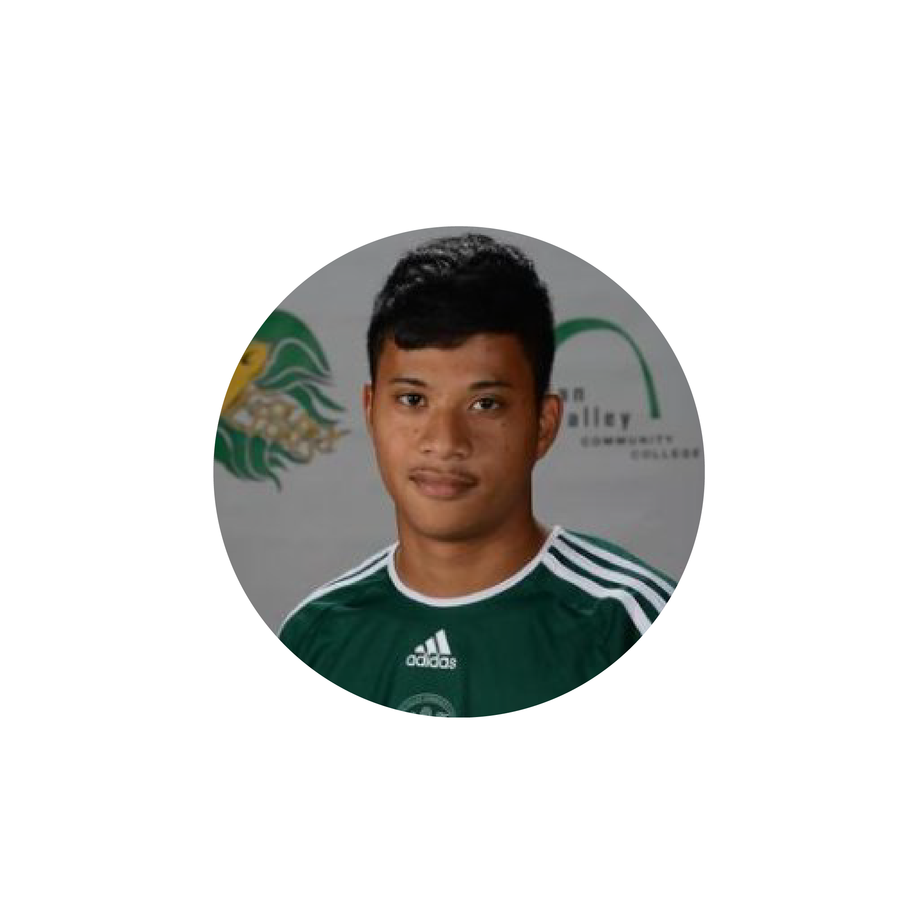
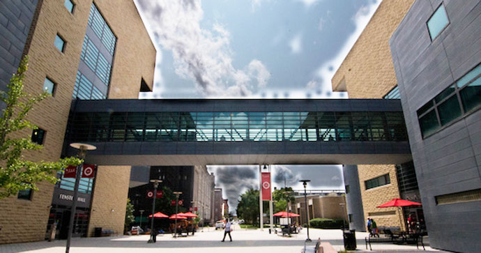
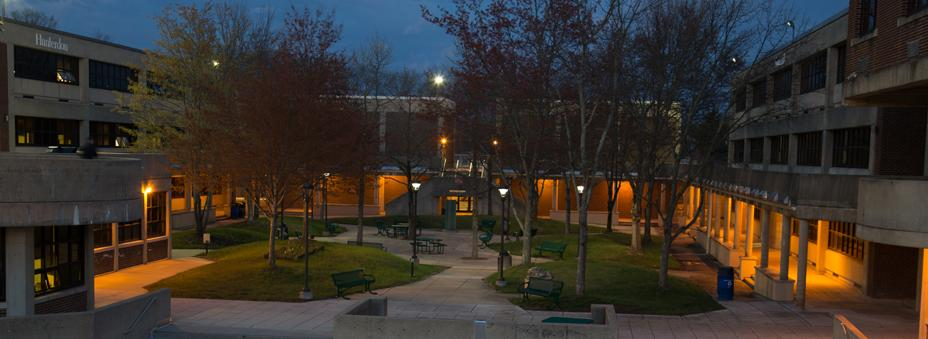
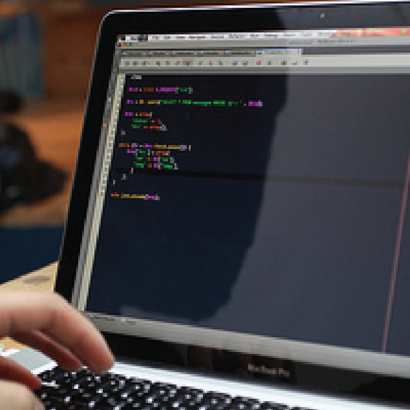
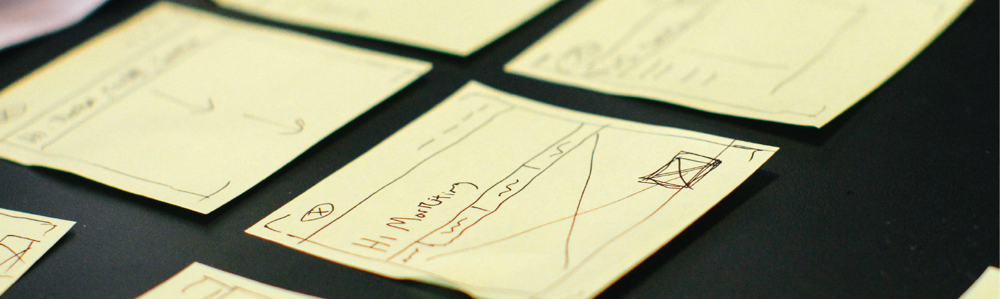
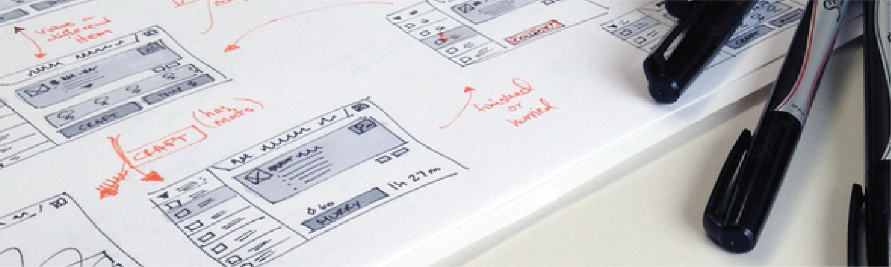
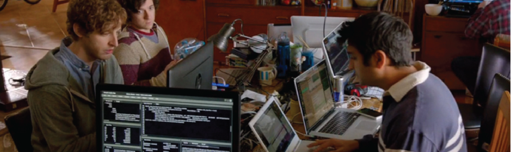
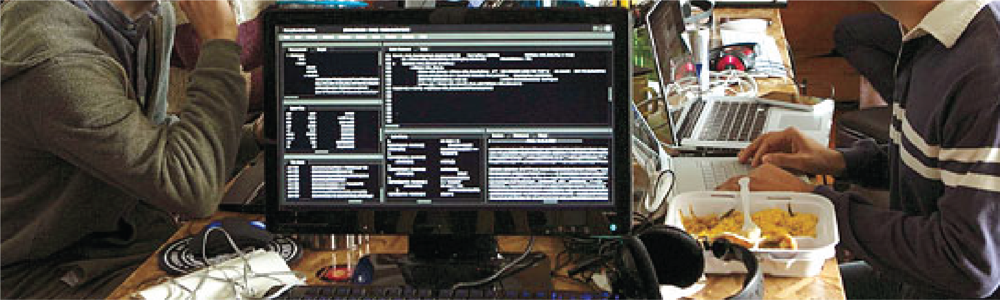

<!DOCTYPE html>
<html lang="en">

<head>

    <meta charset="utf-8">
    <meta http-equiv="X-UA-Compatible" content="IE=edge">
    <meta name="viewport" content="width=device-width, initial-scale=1">
    <meta name="description" content="">
    <meta name="author" content="">

    <title>Allan Viguilla</title>

    <!-- Bootstrap Core CSS -->
    <link href="vendor/bootstrap/css/bootstrap.min.css" rel="stylesheet">

    <!-- Custom Fonts -->
    <link href="https://fonts.googleapis.com/css?family=Lato" rel="stylesheet">
    <link href="https://fonts.googleapis.com/css?family=Catamaran:100,200,300,400,500,600,700,800,900" rel="stylesheet">
    <link href="https://fonts.googleapis.com/css?family=Muli" rel="stylesheet">

    <!-- Plugin CSS -->
    <link rel="stylesheet" href="vendor/font-awesome/css/font-awesome.min.css">
    <link rel="stylesheet" href="vendor/simple-line-icons/css/simple-line-icons.css">
    <link rel="stylesheet" href="vendor/device-mockups/device-mockups.min.css">

    <!-- Theme CSS -->
    <link href="css/new-age.min.css" rel="stylesheet">

    <!-- HTML5 Shim and Respond.js IE8 support of HTML5 elements and media queries -->
    <!-- WARNING: Respond.js doesn't work if you view the page via file:// -->
    <!--[if lt IE 9]>
        <script src="https://oss.maxcdn.com/libs/html5shiv/3.7.0/html5shiv.js"></script>
        <script src="https://oss.maxcdn.com/libs/respond.js/1.4.2/respond.min.js"></script>
    <![endif]-->

</head>

<body id="page-top">

    <nav id="mainNav" class="navbar navbar-default navbar-fixed-top">
        <div class="container">
            <!-- Brand and toggle get grouped for better mobile display -->
            <div class="navbar-header">
                <button type="button" class="navbar-toggle collapsed" data-toggle="collapse" data-target="#bs-example-navbar-collapse-1">
                    <span class="sr-only">Toggle navigation</span> Menu <i class="fa fa-bars"></i>
                </button>
                <a class="navbar-brand page-scroll" href="#page-top">Allan Viguilla</a>
            </div>

            <!-- Collect the nav links, forms, and other content for toggling -->
            <div class="collapse navbar-collapse" id="bs-example-navbar-collapse-1">
                <ul class="nav navbar-nav navbar-right">
                    <li>
                        <a class="page-scroll" href="#download">Education</a>
                    </li>
                    <li>
                        <a class="page-scroll" href="#features">Work Experience</a>
                    </li>
                    <li>
                        <a class="page-scroll" href="#contact">Interests</a>
                    </li>
                </ul>
            </div>
            <!-- /.navbar-collapse -->
        </div>
        <!-- /.container-fluid -->
    </nav>

    <header>
        <div class="container">
            <!-- START HEADER ROW 1 -->
            <div class="row">
                <div class="col-sm-3" style="padding-top:22%;">
                </div>
                <div class="col-sm-6"  style="padding-top:3%;">
                  <center></center>
                  <center><h1>About</h1><h4 style="color:#F2BB0A;"><i>Allan Viguilla, Senior in B.S. Web & Information Systems, New Jersey Institute of Technology</i></h4><hr/></center><br>
                  <center><p>Currently, I am a senior at the New Jersey Institute of Technology, and I am seeking my Bachelor’s of Science in Web and Information Systems. Previously, I studied fine arts and communication design at Rartian Valley Community College and the Fashion Institute of Technology respectively.</p>
                  <p>I am very passionate about technology and the arts. My unique experiences and studies have prepared me to tackle different visual design and software development projects. I hope to find a career in front-end web development and UX/UI design.</p></center>
                  <center><a href="img/resume.pdf" class="btn btn-outline btn-xl">Download Resume</a></center>
                </div>
                <div class="col-sm-3" style="padding-top:22%;">
                </div>
                </div>

            </div>
            <!-- END HEADER ROW 1 -->
        </div>
    </header>

    <section id="download" class="download bg-primary text-center">
        <div class="container">
            <!-- START EDUCATION CONTAINER -->
            <div class="row">
              <!-- START EDUCATION ROW 1 -->
              <div class="col-md-12">
                <center><h1>Education</h1><hr/></center>
              </div>
              <!-- END EDUCATION ROW 1 -->
            </div>
            <div class="row">
            <!-- START EDUCATION ROW 2 -->
              <div class="col-md-6" id="row-content">
                <center></center>
                <center><h3>New Jersey Insititute of Technology</h3></center>
                <center><h4><i>Bachelor’s of Science, Web & Information Systems</i></h4></center>
                <center><h4>Newark, New Jersey</h4></center>
                <center><hr></center>
                <center><h4>Expected Graduation Date: December 2017</h4></center>
                <center><hr></center>
              </div>
              <div class="col-md-6" id="row-content">
                <center></center>
                <center><h3>Raritan Valley Community College</h3></center>
                <center><h4><i>Associate’s of Science, Web Development</i></h4></center>
                <center><h4>Branchburg, New Jersey</h4></center>
                <center><hr></center>
                <center><h4>January 2012 - December 2014</h4></center>
                <center><hr></center>
              </div>
            <!-- END EDUCATION ROW 2 -->
            </div>
            <!-- END EDUCATION CONTAINER -->
        </div>
    </section>

    <section id="features" class="features bg-primary text-center">
        <!-- START WORK EXPERIENCE CONTAINER -->
        <div class="container">
            <!-- START WORK EXPERIENCE ROW 1-->
            <div class="row">
              <div class="col-md-12">
                <center><h1>Work Experience</h1><hr/></center>
              </div>
            <!-- END WORK EXPERIENCE ROW 1-->
            </div>
            <!-- START WORK EXPERIENCE ROW 2-->
            <div class="row">
                <div class="col-md-3" id="row-content">
                  <center></center>
                  <center><h4 style="color:#FFF5EB;"><strong>Student Coordinator<br>CECC @ NJIT<br>Sept. 18, 2016 - Present*</strong></h4></center>

                    <ul id="jobExp"style="font-size:1em;color:#FFF5EB;display:inline;margin:0;padding:0;width:100%;">
                      <li class="list-group">
                      Consult agencies about their options on webhosting and web applications
                      </li>
                      <li class="list-group">
                      Assess agency website needs and perform content audit on current site
                      </li>
                      <li class="list-group">
                      Lead team of 10 student web designers to design, and implement websites
                      </li>
                      <li class="list-group">
                      Prepare project tasks and progress reports for each agency
                      </li>
                    </ul>
                </div>
                <div class="col-md-3" id="row-content">
                  <center></center>
                  <center><h4>Web Designer<br><strong>Newark Arts</strong><br>Jul. 12, 2016 - Nov. 25, 2016</h4></center>
                  <center>
                    <ul id="jobExp">
                      <li class="list-group">
                      Collaborate with the Newark Arts webmaster to audit website content and oversee redesign
                      </li>
                      <li class="list-group">
                      Implement DIVI wordpress theme in order to simplify creating, updating, and modifying content
                      </li>
                      <li class="list-group">
                      Create web and print graphics to be distrubuted by social media, handcards, flyers, posters, etc.
                      </li>
                    </ul>
                </div>
                <div class="col-md-3" id="row-content">
                  
                  <center><h4>Web Designer<br><strong>CECC @ NJIT</strong><br>Sept. 12, 2015 - Sept.18, 2016</h4></center>

                    <ul id="jobExp">
                      <li class="list-group">
                      Assess agency website needs and perform content audit
                      </li>
                      <li class="list-group">
                      Collaborate with 10 student web designers to build, design, and implement websites based on specifications from agency
                      </li>
                      <li class="list-group">
                      Train agencies on how to create, update, and modify content on their new websites
                      </li>
                    </ul>
                </div>
                <div class="col-md-3" id="row-content">
                  
                  <center><h4>Junior Web Designer<br><strong>Service Learning @ RVCC</strong><br>Jun. 2014 - Dec. 2014</h4></center>

                    <ul id="jobExp">
                      <li class="list-group">
                      Develop webpages using HTML/CSS.
                      </li>
                      <li class="list-group">
                      Collaborate with program director and webmaster to design and implement webpages on the college's CMS platform, Ektron.
                      </li>
                      <li class="list-group">
                      Meet with different groups and organizations to address their needs webpage needs.
                      </li>
                    </ul>
                </div>
            <!-- END WORK EXPERIENCE ROW 2-->
            </div>
          <!-- END WORK EXPERIENCE CONTAINER -->
        </div>
    </section>

    <section id="contact" class="contact bg-primary">
        <!-- START INTERESTS CONTAINER-->
        <div class="container">
          <!-- START INTERESTS ROW 1 -->
          <div class="row">
            <div class="col-md-12">
              <center><h1>Interests</h1><hr/></center>
            </div>
          <!-- END INTERESTS ROW 1 -->
          </div>
          <!-- START INTERESTS ROW 2 -->
          <div class="row">
            <div class="col-md-6" id="row-content">
              <center><h3>UX/UI Design</h3></center>
              <center></center>
              <center></center>
              <p style="padding-top:.5em;">I find UX Design interesting, because I enjoy creating unique experiences for people. The process of improving the usability, accessibility, and pleasure of a project requires a unique set of skills. You need to have visual design skills as well as understanding how people think and interact with your work.</p>
            </div>
            <div class-"col-md-6" id="row-content">
              <center><h3>Front-End Web Development</h3></center>
              <center></center>
              <center></center>
              <p style="padding-top:.5em;">I like Front-End Web Development for many of the same reasons. You need to possess some basic techincal skills such as HTML, CSS, and Javascript. The rest is about how you design the layout and control how your user interacts with the webpage.</p>

            </div>
          <!-- END INTERESTS ROW 2 -->
        </div>
        <!-- END INTERESTS CONTAINER-->
        </div>
    </section>

    <footer>
        <div class="container">
        <div class="row">
          <h6>shoutout startbootstrap for the theme:<a href="https://startbootstrap.com/template-overviews/new-age/">new age</a></h6><hr>
          <h3><strong>Contact</strong></h3>
          <h5><strong>personal:</strong>allanviguilla@gmail.com</h5>
          <h5><strong>work:</strong>allan@simplicitdesign.com</h5>
          <h5><strong>school:</strong>av396@njit.edu</h5>
          <a href="https://www.linkedin.com/in/allan-viguilla-11288398/"></a>
        </div>
        </div>
    </footer>

    <!-- jQuery -->
    <script src="vendor/jquery/jquery.min.js"></script>

    <!-- Bootstrap Core JavaScript -->
    <script src="vendor/bootstrap/js/bootstrap.min.js"></script>

    <!-- Plugin JavaScript -->
    <script src="https://cdnjs.cloudflare.com/ajax/libs/jquery-easing/1.3/jquery.easing.min.js"></script>

    <!-- Theme JavaScript -->
    <script src="js/new-age.min.js"></script>

</body>

</html>
